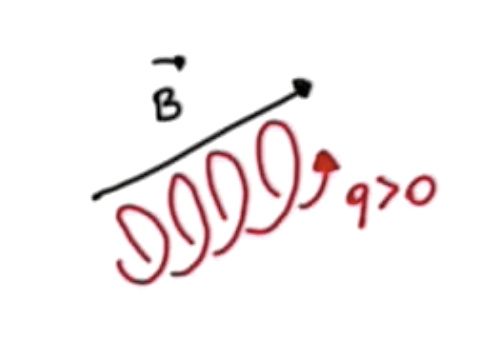
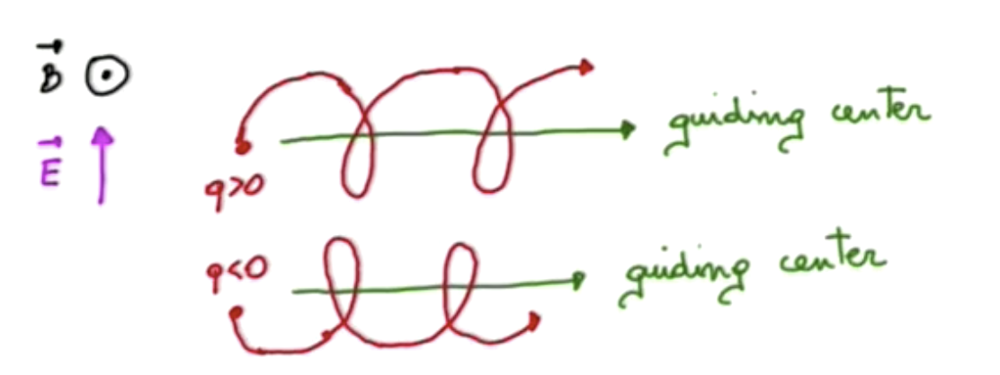
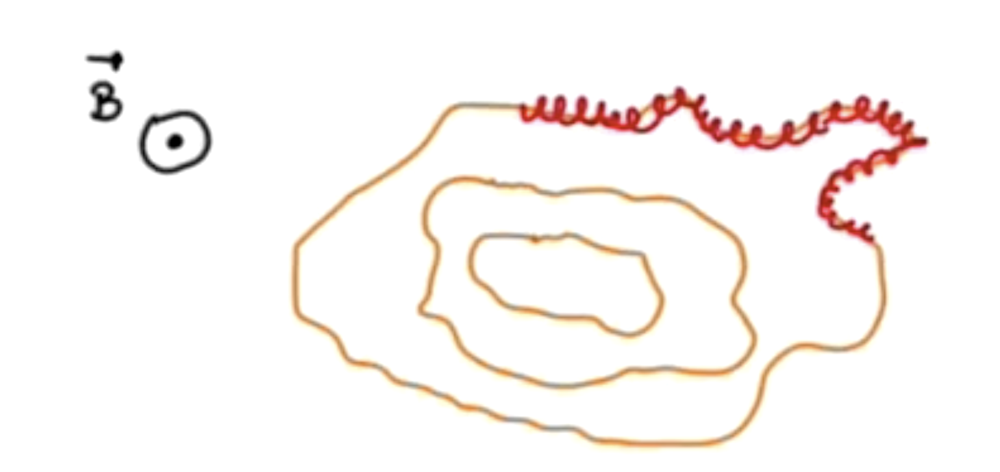
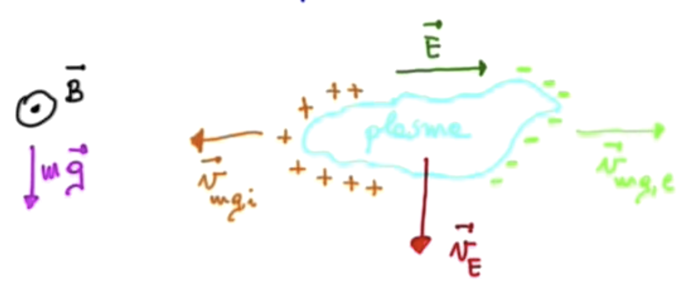
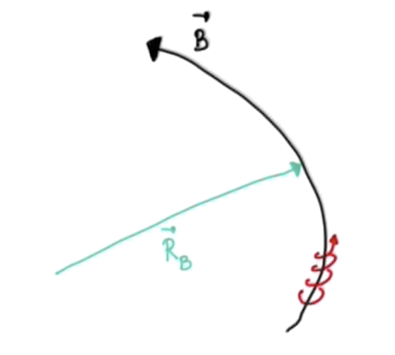
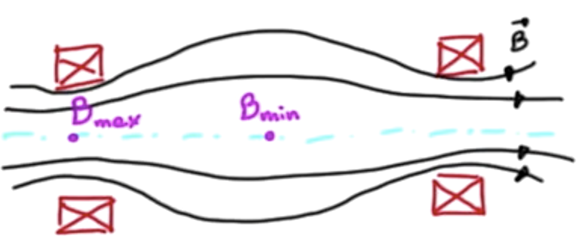
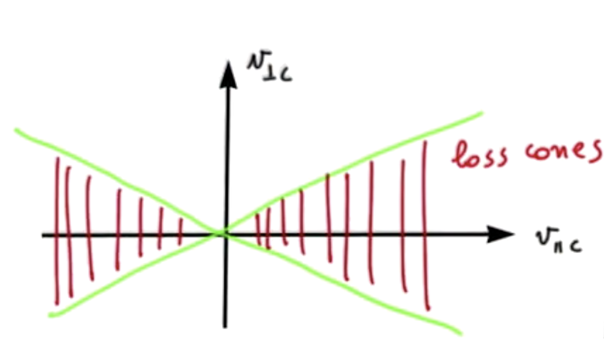

1.2 Particle motion in EM fields
Now that you've got a rigorous definition of a plasma, what can you say about the motion of a charged particle within a plasma? Plasmas are made of electrons and ions that move under the effect of EM fields. Those fields are generated self-consistently by the plasma constituents, so if you want to describe a plasma in a self-consistent way, you need to both describe the generation of these EM fields and resultant the motion of the charged particles.
To begin with, start with the simplest cases. Assume that the EM fields are given and watch how a charged particle moves under the given fields.
1.2.1 Motion of a particle in static and uniform magnetic field
In a magnetostatic situation, you must solve
with constant. The variation of the kinetic energy is given by
So is constant. Of course, we already knew that magnetic fields can do no work, so that's not surprising at all.It is convenient to to decompose the velocity of the particle along directions parallel and perpendicular to the magnetic field
Projecting the equation of motion onto the parallel direction gives
So the derivative of is perpendicular to and its modulus is constant, so in the perpendicular direction the particle undergoes uniform circular motion with frequency given by the cyclotron frequency
The motion of the particle will be a helical trajectory along the direction of the magnetic field:

The handedness of the motion is defined by the charge of the particle. Positively charged particles will move in a left-handed rotation with respect to , and negatively charged particles will move with right-handed rotation with respect to .
1.2.2 Plasma magnetic properties
Just looking at the simple magnetostatic case of a charged particle we can infer some of the magnetic properties of a plasma. In the presence of a magnetic field a charged particle undergoes uniform circular motion, so it produces a current loop. There is a magnetic moment associated with a magnetic loop. Some properties of the vector magnetic moment are
- Its magnitude is
- Its direction will be opposite to for both and .
- The magnetic field imposed externally will be reduced by the motion of the charged particles in a plasma. In other words, plasmas have diamagnetic properties.
-
is an adiabatic invariant. What do we mean by this? From analytical mechanics, the action of a coordinate and its conjugate momentum is constant under a slow change in an external parameter. This assumes that the motion is periodic if there is no change in an external parameter. Here is the integral over one period. This means that the magnetic moment will be constant if the externally applied magnetic field changes more slowly than the period of the particle's cyclotron motion.
- For the magnetic moment , (in the direction perpendicular to the externally applied B) and .
1.2.3 Motion of a particle in static and uniform E and B
First thing's first. Let's write down Newton's equation for a charged particle under the influence of static electric and magnetic fields
Breaking it apart into directions parallel and perpendicular to the magnetic field,
-
Parallel direction: This is just the equation for uniformly accelerated motion, so the parallel direction is very simple.
-
Perpendicular direction:
To get a feel for what happens in the perpendicular direction, let's assume a simple case in which points upwards, and points out of the page (they are to each other). We also assume that the particle starts at rest. Initially, it will be accelerated in the direction of the electric field. As it gains velocity, the magnetic field will curve the trajectory clockwise. When the particle turns around and opposes the electric field, it will slow down, and the Larmor radius will decrease accordingly. A "guiding center" of the particle's motion will move in a direction perpendicular to both the electric field and the magnetic field. Interestingly, the direction of motion of the guiding center is the same for both positively and negatively charged particles.

Let's try to understand what the drift of the guiding center looks like. Averaging the perpendicular equation of motion over one gyroperiod:
Taking the cross-product with the magnetic field,
While we're in the business of decomposing our directions, we can write as a composition of this drift velocity and some "perturbation" velocity
So the motion of a charged particle in the presence of static E and B fields is given by the superposition of gyromotion, uniform E acceleration, and drift motion of the guiding center . The drift direction is independent of the sign of charge. The guiding center will move along isocontour lines of the electrostatic potential:

1.2.4 Motion of a particle in uniform B with arbitrary external force
We can easily generalize our drift velocity result to the case of an arbitrary external force on top of the Lorentz force.
Application: Gravitational Force
By applying what we know about the drift velocity, what can we say about the behavior of a plasma under the influence of gravity and a magnetic field? Will it fall?
Initially, the drift velocity will be perpendicular to both and , so it will be horizontal and the plasma will not fall. However, the direction of the drift velocity will be opposite for positive and negatively charged particles. This will lead to a charge buildup, which causes an electric field across the plasma. The drift velocity resulting from and is now pointing downwards, and is in the same direction for both positively and negatively charged particles. Therefore, the plasma will fall downwards under the influence of gravity, but under a much more complicated process than it would initially seem.

Application: Curvature Drift
What if we have a curved ? A particle moving in a curved magnetic field tries to follow the field lines, since motion to is resisted. The particle will experience a centrifugal force

And as a result, it will drift: It turns out that this curvature drift is a very important quantity in plasma physics.1.2.5 Gradient Drift (non-uniform B)
Now, what if our particle moves in a region of non-uniform ? Once again, the motion of the particle will follow a guiding center, with a periodic perturbation motion atop. The calculation of the velocity of the guiding center is quite complicated, but the result is
This is what is called the "grad-B drift".
1.2.6 Plasma Confinement for Single-Particle Motion
How should we go about confining a plasma? We've seen that in the presence of magnetic fields, the trajectory of a charged particle is helical along the field lines. So a magnetic field provides confinement of charged fields perpendicular to the field lines, but not along the parallel direction. If we want to confine a plasma, we need to somehow limit the loss of charged particles along the direction of the magnetic field.
Open field lines
One way to do this is using open field lines, and noting a force which acts on magnetic moment:
As an example, if we have two coaxial ring currents the field lines will constrict through the rings and expand in the region between the rings. This means that a magnetic dipole which is nearer to one of the rings will feel a force toward the other ring, with a stable point in the center. This is the principle behind so-called "magnetic mirrors".

Since we've got an axially symmetric system we describe it in cylindrical coordinates (distance from the axis), , and . We will focus on particles which have guiding centers on the axis to simplify the math; a similar result can be obtained for particles moving off-axis.
Let's write down the magnetic force near the axis:
since (where is the Larmor radius)
Where we recognize the magnetic moment we just described in the previous section. So we have recovered the stable force on a magnetic moment in a non-uniform magnetic field.
What are the particles that can be confined by a magnetic mirror? As we saw in the previous lecture, the magnetic moment is a constant of motion. It will therefore be equal both at the center of the magnetic mirror and at the edge:
where we take the edge (e) and the center (c) of the mirror. The kinetic energy is also a constant of motion
A particle will be reflected if, while moving towards , vanishes. Therefore
We can visualize the region of stability by looking at the phase space . Outside of the loss cones, the particle will be confined while moving along the axis of the magnetic mirror.

An example of a real magnetic mirror is the Earth's magnetic field. Since it is a dipolar field, there are charged particles that move subject to the presence of the magnetic fields. The particles will stream along the field lines. When they approach the magnetic poles, they experience a stronger field and are pushed back, leading to an accumulation of particles in the equatorial regions of the Earth's magnetic field.
Closed magnetic field lines
We can close the field lines in a toroidal-shaped device, such as a doughnut-shaped solenoid. The field lines within the device are tangential to the ring and closed. This is the design used in tokamaks and stellarators.
Imagine a toroidal device with a set of coils carrying a current, creating closed field lines. The intensity of the magnetic field is given by with the number of coils, the current, and the radius of curvature of the field lines. Since is curved, drifts are present! The curvature and grad-B drifts are